EN - Before / after on a real frame. Say your numbers; the draft codex is written with your provenance, then you sign it (validated_by_magos).
FR - Avant / apres sur une frame reelle. Tu donnes tes chiffres ; le brouillon de codex est ecrit avec ta provenance, puis tu le signes.
Ordre du postprod, grave : glow -> caption -> lut -> fade (PP2).
| clip | avant | apres glow |
|---|---|---|
| A01 | 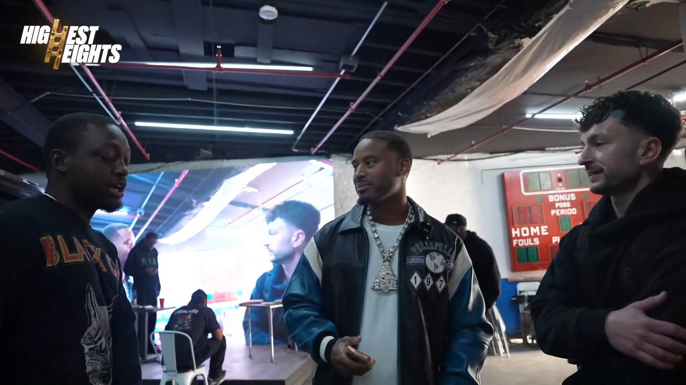 | 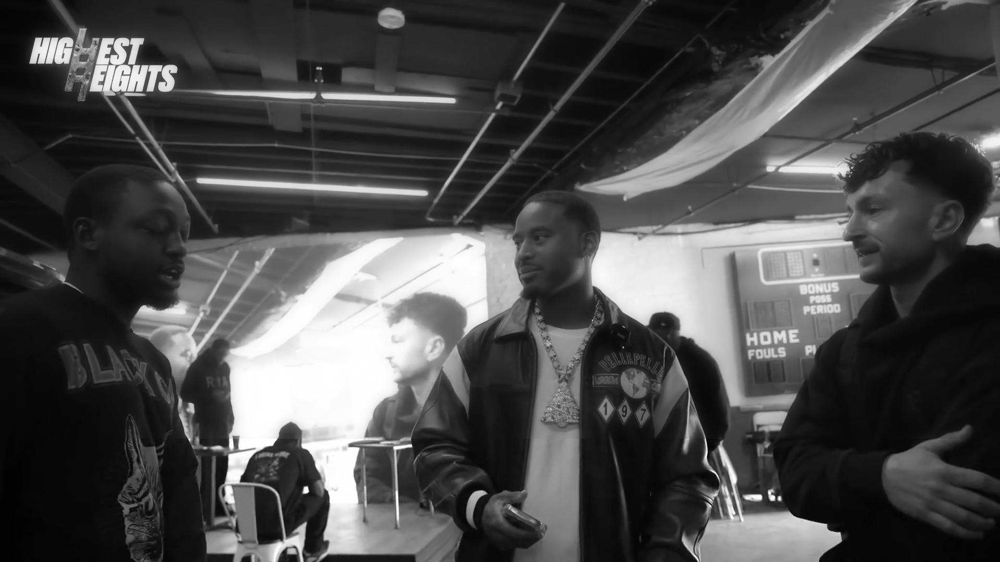 |
| A02 | 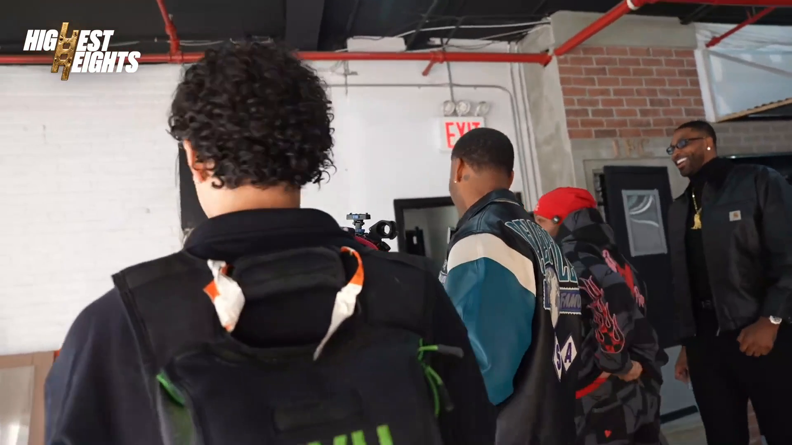 | 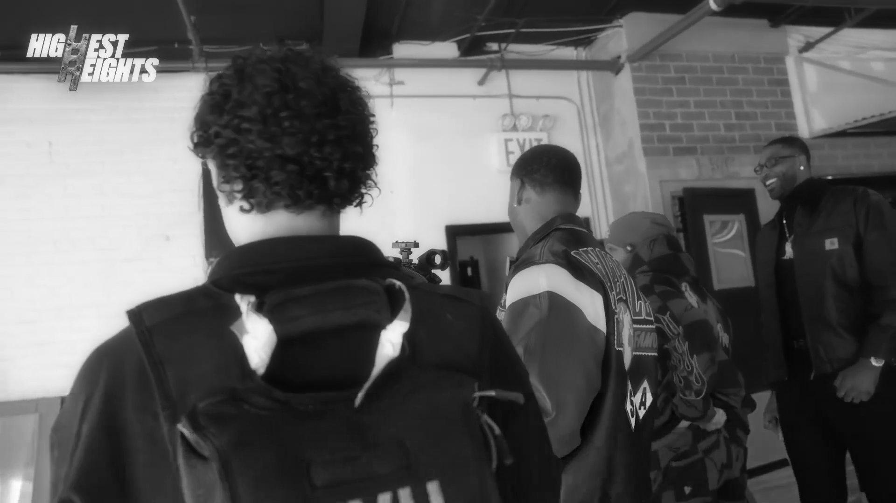 |
| A03 | 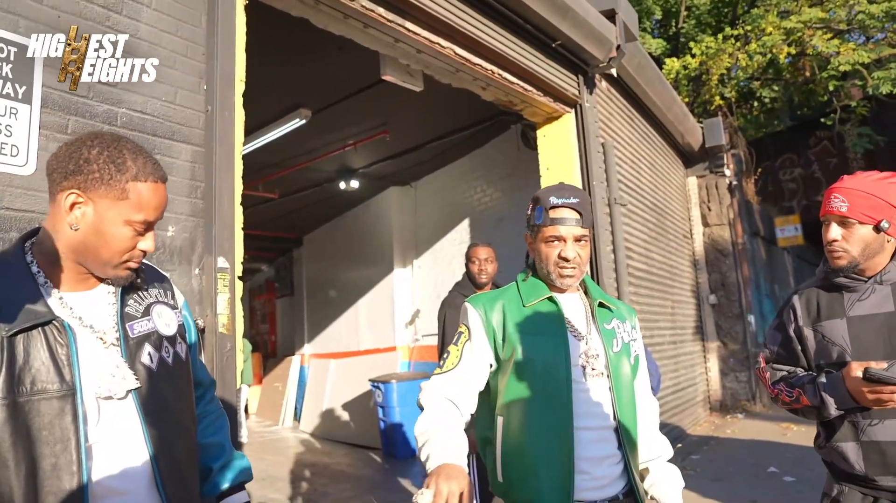 | 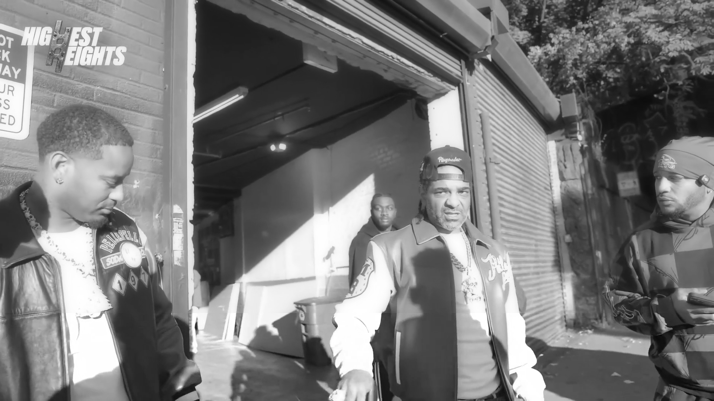 |
| A04 | 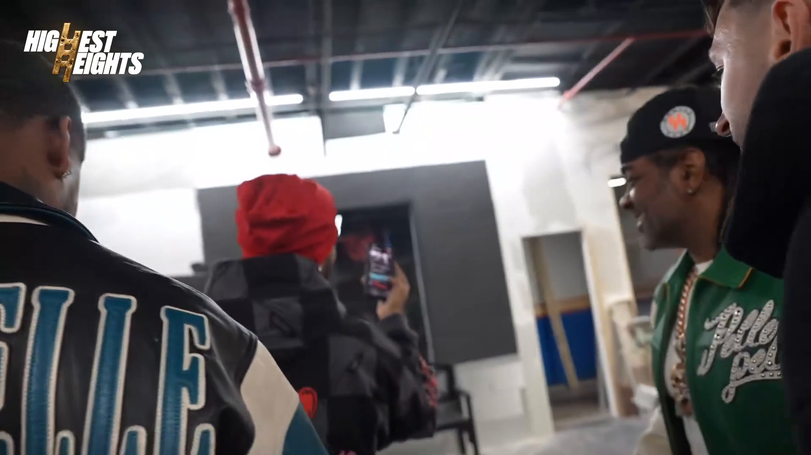 | 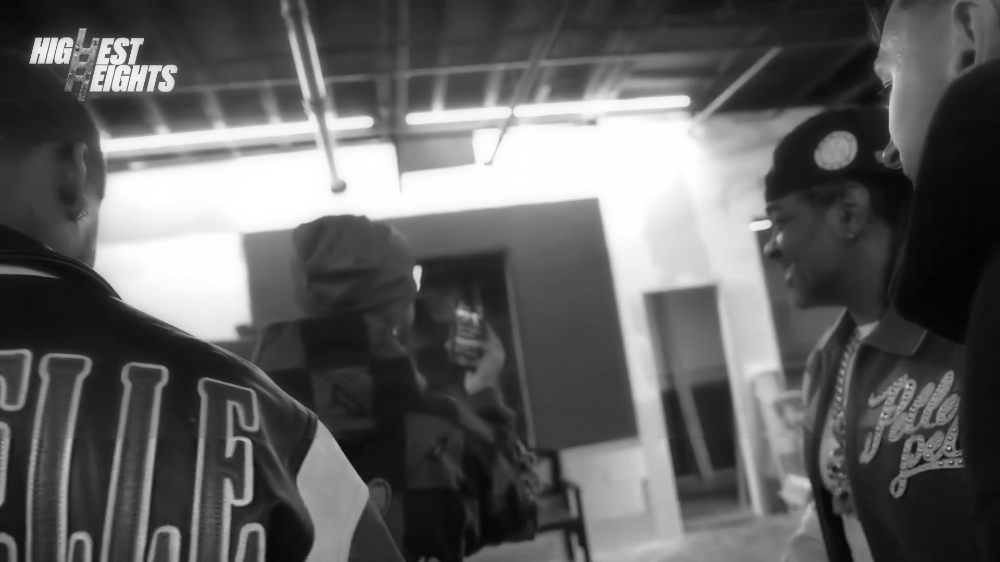 |
| A05 | 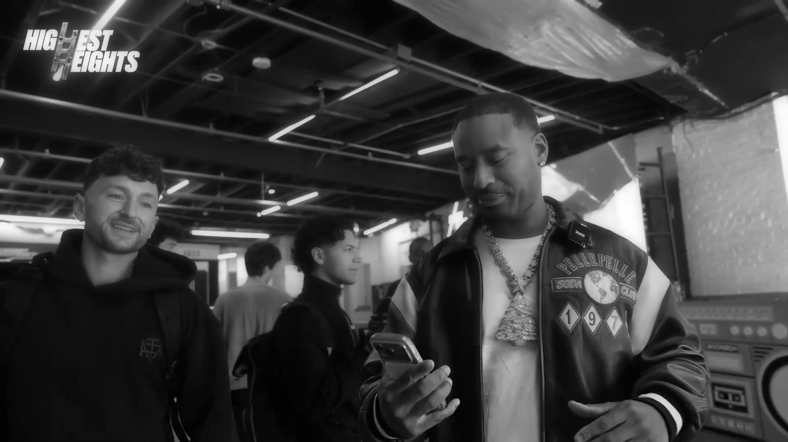 | |
| A06 | 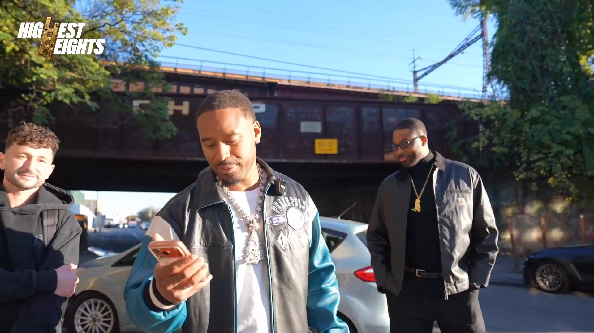 | 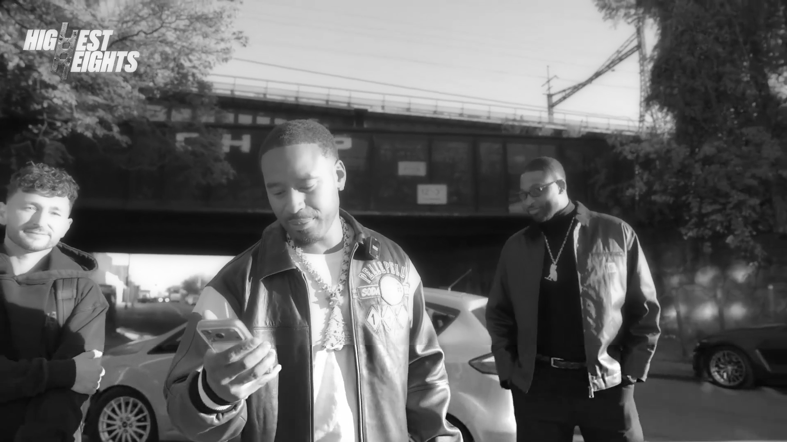 |
| A07 | 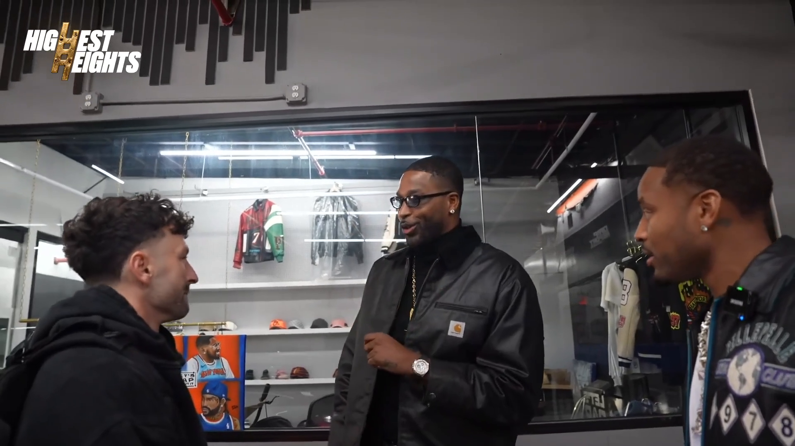 | 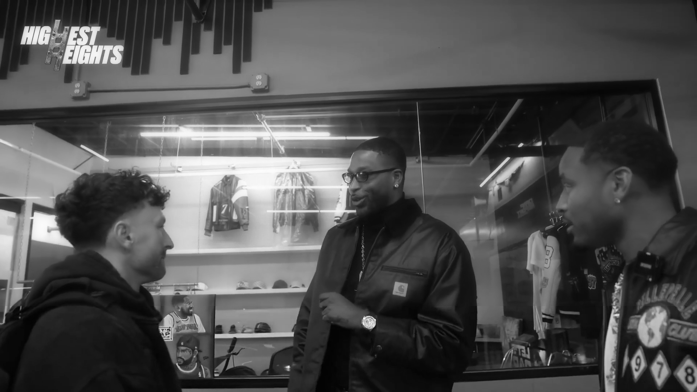 |
| A08 | 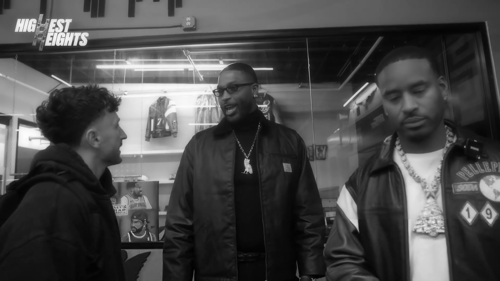 | |
| A09 | 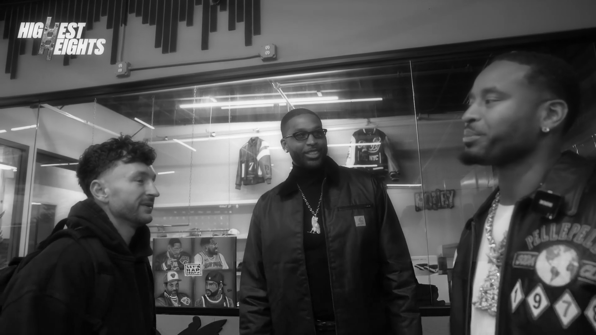 |